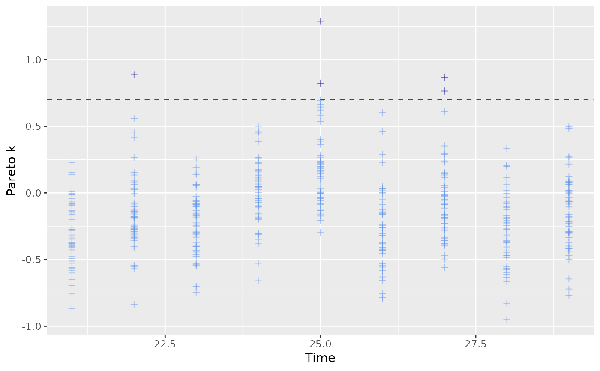

Estimates the leave-future-out (LFO) information criterion for dynamite
models using Pareto smoothed importance sampling.
Usage
lfo(x, ...)
# S3 method for class 'dynamitefit'
lfo(x, L, verbose = TRUE, k_threshold = 0.7, ...)Arguments
- x
[
dynamitefit]
The model fit object.- ...
Additional arguments passed to
rstan::sampling()or the$sample()method of theCmdStanModelobject, such aschainsandcores(parallel_chainsincmdstanr).- L
[
integer(1)]
Positive integer defining how many time points should be used for the initial fit.- verbose
[
logical(1)]
IfTRUE(default), print the progress of the LFO computations to the console.- k_threshold
[
numeric(1)]
Threshold for the Pareto k estimate triggering refit. Default is 0.7.
Value
An lfo object which is a list with the following components:
ELPD
Expected log predictive density estimate.ELPD_SE
Standard error of ELPD. This is a crude approximation which does not take into account potential serial correlations.pareto_k
Pareto k values.refits
Time points where model was re-estimated.L
L value used in the LFO estimation.k_threshold
Threshold used in the LFO estimation.
Details
For multichannel models, the log-likelihoods of all channels are combined. For models with groups, expected log predictive densities (ELPDs) are computed independently for each group, but the re-estimation of the model is triggered if Pareto k values of any group exceeds the threshold.
References
Paul-Christian Bürkner, Jonah Gabry, and Aki Vehtari (2020). Approximate leave-future-out cross-validation for Bayesian time series models, Journal of Statistical Computation and Simulation, 90:14, 2499-2523.
See also
Model diagnostics
hmc_diagnostics(),
loo.dynamitefit(),
mcmc_diagnostics()
Examples
data.table::setDTthreads(1) # For CRAN
# \donttest{
# Please update your rstan and StanHeaders installation before running
# on Windows
if (!identical(.Platform$OS.type, "windows")) {
# this gives warnings due to the small number of iterations
out <- suppressWarnings(
lfo(gaussian_example_fit, L = 20, chains = 1, cores = 1)
)
out$ELPD
out$ELPD_SE
plot(out)
}
#> Estimating model with 20 time points.
#> Estimating model with 22 time points.
#> Estimating model with 25 time points.
#> Estimating model with 27 time points.

# }